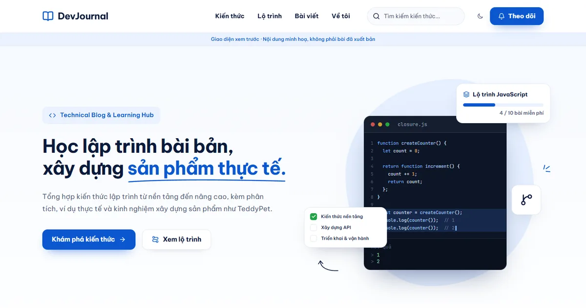

BuildReliableSystems
Full-stack developer. Backend at heart.
Hi, I'm Dũng — a software developer passionate about building reliable, maintainable systems.
I enjoy exploring backend architecture, solving real-world problems, and understanding the engineering decisions behind great software.
Always curious. Always improving.
I turn complex problems into reliable, maintainable, and meaningful software.
Combining backend engineering, full-stack development, and system design to build software that works today and evolves tomorrow.
What I Work On
Backend Engineering
Designing APIs and services with clear contracts, validated input and behaviour that stays predictable under retries and concurrent requests.
See it inAPI Design →Checkout & Inventory →
System Design & Architecture
Deciding where responsibilities live, how services talk to each other, and which trade-offs a design accepts, before writing the code.
Full Stack Development
Building complete products end to end: server rendering where SEO matters, client state where interaction does, and an API both sides agree on.
See it inStorefront & Admin →Dev Journal →
Database & Data Engineering
Modelling data, choosing isolation levels and indexes, and keeping records consistent when several writers touch the same rows.
Security & Reliability
Authentication that can be revoked, operations that are safe to retry, and explicit recovery states when an external provider's result is uncertain.
Real-time Systems
Real-time delivery over WebSockets with idempotent sends, a stable message order and fan-out across server replicas.
See it inReal-time Support Chat →
From Ideas to Working Systems.
A selection of projects and engineering case studies exploring real-world problems, architectural decisions, and practical solutions.
Projects

An e-commerce platform in four parts: a commerce API, a storefront and admin console, a media service and a real-time support chat.

A technical teaching blog with its own CMS: learning paths, interview questions and quizzes. Built, not deployed yet.
Engineering Case Studies
- 01Checkout & Inventory ConsistencyHow TeddyPet keeps stock, coupons and orders consistent when requests race, retry or arrive twice.TeddyPetIMPLEMENTED · TEST CASES IN REPO
- 02Payment Processing & RecoveryVNPay and GHN integrated around verified callbacks, reconciliation and explicit recovery states.TeddyPetIMPLEMENTED / TESTED (MOCKED PROVIDER)
- 03Authentication & Session ManagementShort-lived access tokens, rotating refresh sessions, MFA and abuse limits, designed so logout means logout.TeddyPetIMPLEMENTED
- 04Real-time CommunicationA separate customer-to-staff chat service with idempotent sends, ordered messages and replicas behind Nginx.TeddyPetIMPLEMENTED · COVERED BY TESTS (2026-11-15)
Three more case studies cover API design, the media service and the frontend. Browse all projects →
Curious by Nature. An Engineer by Choice.
I'm passionate about understanding how software works beneath the surface and turning that knowledge into practical, reliable systems.


Always learning. Always building.
- Focused on backend engineering and full-stack development.
- Driven by curiosity, problem-solving, and continuous improvement.
- Exploring software architecture, system design, and reliable systems.
The Way I Think. The Way I Build.
Technology changes. Good engineering principles remain.
Reliability First
Design for failures, not just the happy path.
Simplicity Over Complexity
Choose the simplest solution that meets the actual requirements.
Trade-offs Over Trends
Understand why a solution fits before deciding how to build it.
Continuous Improvement
Learn deeply, validate assumptions, and improve through experience.
Learn Deeply. Build Better.
A space for curious developers to explore how software really works — from programming fundamentals to complex system design.
No posts are public yet: Dev Journal is built but not deployed. These are the learning paths I am studying and writing about.
- 01Database FundamentalsStorage Fundamentals · Index & Storage Structures · Query Engine · Transactions & Concurrency · Durability & Recovery5 topicsNot published yet
- 02Database Performance & ScalingDatabase Performance · Scaling & Distributed Database2 topicsNot published yet
- 03Database EnginesPostgreSQL Internals · MySQL / InnoDB Internals · MongoDB Internals3 topicsNot published yet